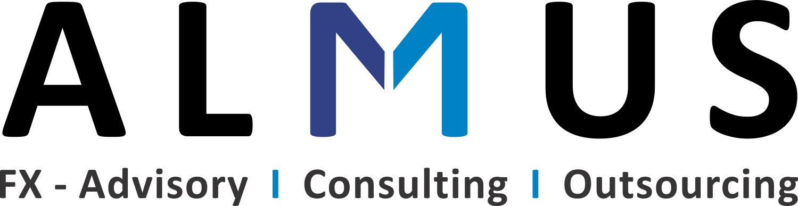
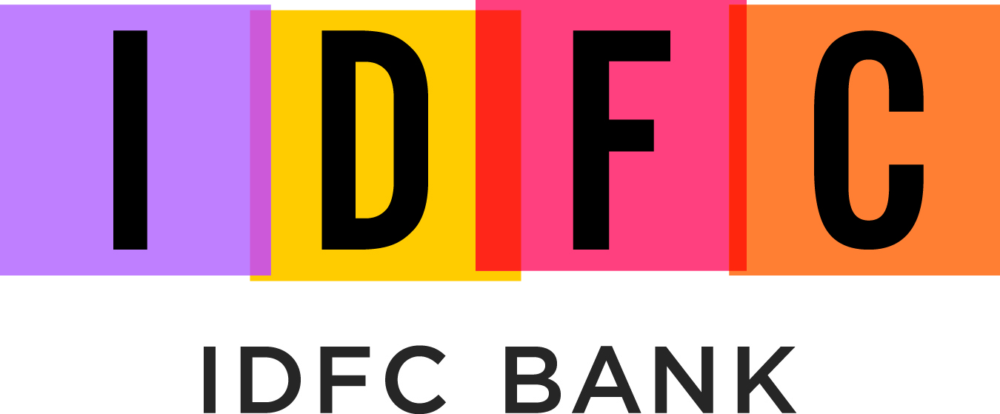
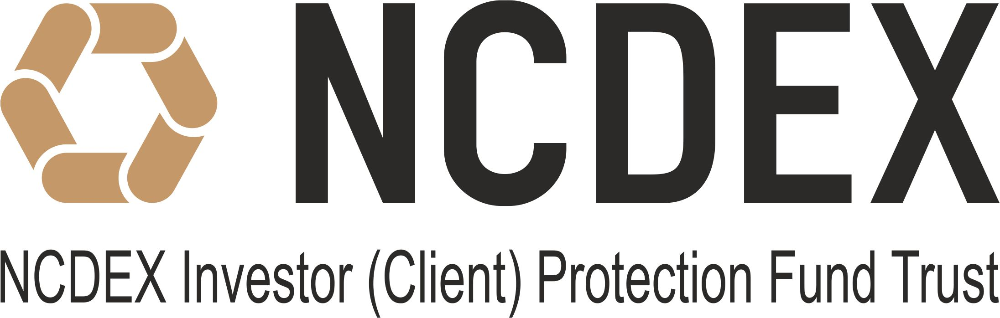

| Speaker Profile 2018 |
Previous conferences
| EMF 2019 |
| EMF 2017 |
| EMF 2016 |
| EMF 2015 |
| EMF 2014 |
| EMF 2013 |
| EMF 2012 |
| EMF 2011 |
| EMF 2010 |
13th - 15th December 2018
The Trident, BKC, Bombay
The Trident, BKC, Bombay
Programme Committee
- Pab Jotikasthira, Cox Business School
- Vikramaditya S. Khanna, University of Michigan Law School
- Subrata Sarkar, IGIDR
- Ajay Shah, National Institute of Public Finance and Policy
- Ram Thirumalai, Indian School of Business
- Susan Thomas, IGIDR
- Pradeep Yadav, University of Oklahoma, Business School
- Yesha Yadav, Vanderbilt Law School
13th December 2018
| 08:30-09:00 | Registration and tea/coffee |
| 09:00-10:30 |
Opening session: Achieving High
N2: The Benefits and challenges of trading
with strangers
Talk by: Larry Harris, University of Southern California [presentation] Introduction by Susan Thomas, IGIDR, FRG |
| Panel: | Enabling trading in anonymous markets Pradeep Yadav, University of Oklahoma Mrugank Paranjape, Multi-commodity Exchange Vijay Kumar, NCDEX Kshama Fernandes, Northern Arc |
| 10:30-11:40 | Session I: Financial crisis |
| The morning after: the impact on collateral supply of a major market default Dermot Turing, Consultant, Clifford Chance and Manmohan Singh, Senior Economist Discussant: Ajay Shah, NIPFP |
|
| The Myth of Risk Free Markets [paper] [presentation] Yesha Yadav, Vanderbilt Law School Discussant: Neeraj Gambhir, Independent |
|
| 11:40-11:55 | Coffee and tea break |
| 11:55-13:05 | Session II: Bankruptcy |
| Bankruptcy on the Side
[paper]
[presentation] Anthony Casey, University of Chicago Law School, Kenneth Ayotte, University of California and David Skeel, University of Pennsylvania Discussant: Pratik Datta, NIPFP [presentation] |
|
| Do Economic Conditions Drive DIP Lending?: Evidence from the Financial Crisis
[paper]
[presentation] Fred Tung, Boston University Discussant: Manish Singh, IGIDR, FRG [presentation] |
|
| 13:05-14:05 | Lunch talk: Innovation and Institutions: India vs China by Kose John, Leonard N. Stern School of Business [presentation] Introduction by Susan Thomas, IGIDR, FRG |
| 14:05-15:35 Panel: |
The Indian bankruptcy reform Joshua Felman, J. H. Consulting Kose John, Leonard N. Stern School of Business Hemant Sahai, HSA Renuka Sane, NIPFP Susan Thomas, IGIDR, FRG (Moderator) |
| 15:35-15:50 | Coffee and tea break |
| 15:50-17:00 | Session III: Empirical Corporate Finance |
| A new order of financing investments: Evidence from acquisitions by India's listed firms
[paper] [presentation] Varun Jindal, IIM, Calcutta and Rama Seth, Copenhagen Business School Discussant: Vimal Balasubramaniam, University of Warwick [presentation] |
|
| Margin trading and corporate investments: Evidence from a quasi-natural experiment in China
[paper] [presentation] G. Nathan Dong, Columbia University, Ming Gu, Xiamen University, Weiwei Huang, Renmin University of China and K. C. John Wei, Hongkong Polytechnic University Discussant: Sean Foley, University of Sydney [presentation] |
14th December 2018
| 09:30-10:40 | Session IV: Household Finance |
|
Policy uncertainty and household stock market participation [paper] [presentation]
Vikas Agarwal, Hadiye Aslan, Lixin Huang and Honglin Ren, Georgia State University Discussant: Renuka Sane, NIPFP [presentation] |
|
|
Efficacy of loan waiver programs [paper] [presentation] Tanika Chakraborty, IIM, Calcutta and Aarti Gupta, IIT, Kanpur Discussant: Rajendra Vaidya, IGIDR [presentation] |
|
| 10:40-10:55 | Coffee and tea break |
| 10:55-12:05 | Session V: Legal thinking in corporate governance |
| The Shifting Tides of Merger Litigation
[paper]
[presentation] Mathew Cain, U.S. Securities and Exchange Commission, Jill Fisch, University of Pennsylvania Law School, Steven Davidoff Solomon, UC Brekeley School of Law and Randall Thomas, Vanderbilt law School Discussant: Pratik Datta, NIPFP |
|
| Corporate Culture and Corporate Governance
[paper]
[presentation] Jennifer Hill, University of Sydney Discussant: Anjali Sharma, IGIDR, FRG |
|
| 12:05-13:35 | Lunch talk : Big Data and the Government:
Implications for Individuals and Businesses
[paper]
[presentation] by Chris Slobogin, Vanderbilt Law School Introduction by Smriti Parsheera, NIPFP |
| 13:35-15:05 Panel: |
The Indian twin balance sheet crisis Joshua Felman, J. H. Consulting Neeraj Gambhir, Independent Ajay Shah, NIPFP Harsh Vardhan, Bain Consulting (Moderator) |
| 15:05-15:15 | Coffee and tea break |
| 15:15-15:50 | Session VI: Making courts work |
| The Indian Securities Fraud Class Action: Is Class Arbitration the Answer?
[paper]
[presentation] Brian Fitzpatrick , Vanderbilt Law School Discussant: Bhargavi Zaveri, IGIDR, FRG [presentation] |
|
| 18:00-21:00 | Dinner talk: Enforcing Securities Regulation
by The Honorable Judge Kent Jordan, United State Court of Appeals for the Third Circuit Introduction by Yesha Yadav, Vanderbilt Law School |
| Panel: | Issues in enforcement of regulations Vikramaditya Khanna, University of Michigan Law School Sandeep Parekh, Finsec Law Advisors Justice (Retd) B. N. Srikrishna, Supreme Court of India Bhargavi Zaveri, IGIDR, FRG (Moderator) |
15th December 2018
| 09:30-11:15 | Session VII: Asset pricing |
| Global market inefficiencies S. M. Bartram , University of Warwick and Mark Grinblatt, UCLA Anderson School of Management Discussant: Joshua Felman, J. H. Consulting |
|
|
Variation in liquidity and costly arbitrage
[paper]
[presentation]
Badrinath Kottimukkalur, George Washington University Discussant: Fang Qiao, Tsinghua University [presentation] |
|
| Variance risk premiums in emerging markets
[paper]
[presentation] Fang Qiao, Tsinghua University, Lia Xu, Syracuse University, Xiaoyan Zhang and Hao Zhou, Tsinghua University Discussant: Badrinath Kottimukkalur, George Washington University [presentation] |
|
| 11:15-11:30 | Coffee and tea break |
| 11:30-12:40 | Session VIII: Microstructure |
| Dealer spreads in the corporate bond marker:
Agent vs. market-making roles Pradeep Yadav University of Oklahoma Discussant: Venkatesh Panchapagesan, IIM, Bangalore |
|
|
The impact of tick sizes on trade behaviour: evidence from Cryptocurrency exchanges
[paper]
[presentation] Anne H. Dyhrberg, Sean Foley and Jiri Svec, University of Sydney Discussant: Nidhi Aggarwal, IIM, Udaipur [presentation] |
|
| 12:40-13:40 | Lunch talk: Kicking the Can Down the Road: Government Interventions in the (European) Banking Sector by Viral Acharya, RBI Introduction by Pradeep Yadav University of Oklahoma |
| 13:40-15:10 |
Building the BCD nexus: Bombay/GIFT/London Introduction by Anjali Sharma, IGIDR, FRG |
| Panel: |
Ajay Shah, NIPFP Sanjiv Shah, Entrepreneur Harsh Vardhan, Bain Consulting Bijoor Venkatesh, Almus Consulting |
| 15:10-15:25 | Coffee and tea break |
| 15:25-16:35 Presentation: |
Session IX: Audit Findings and Recommendations on Regulating Audit Firms and the Networks, by Pratik Datta [presentation] |
| Panel: |
Rajendra Chitale, M.P.Chitale & Company Sanjay Kallapur, ISB, Hyderabad Rahul Kapani, True North |
| 16:35-16:50 | Closing remarks |
Note: Confirmed speakers at the conference are marked in boldface.
|
   |

|